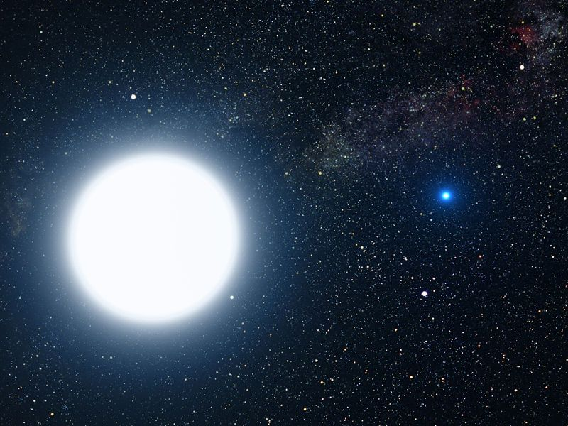
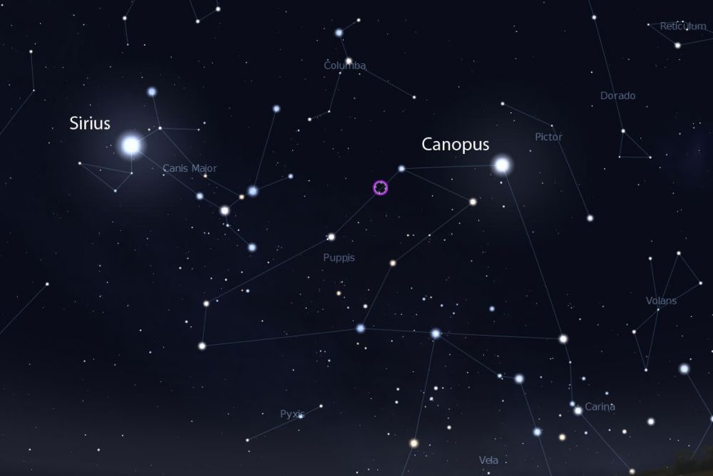
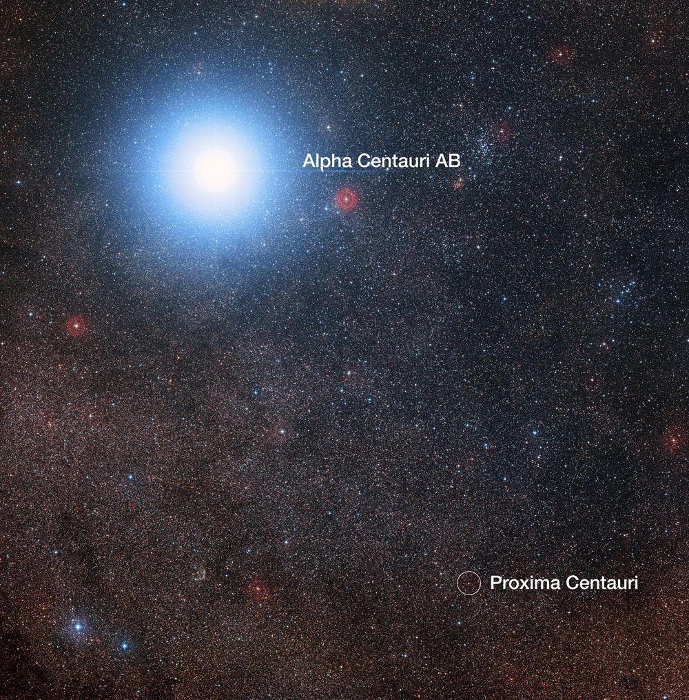
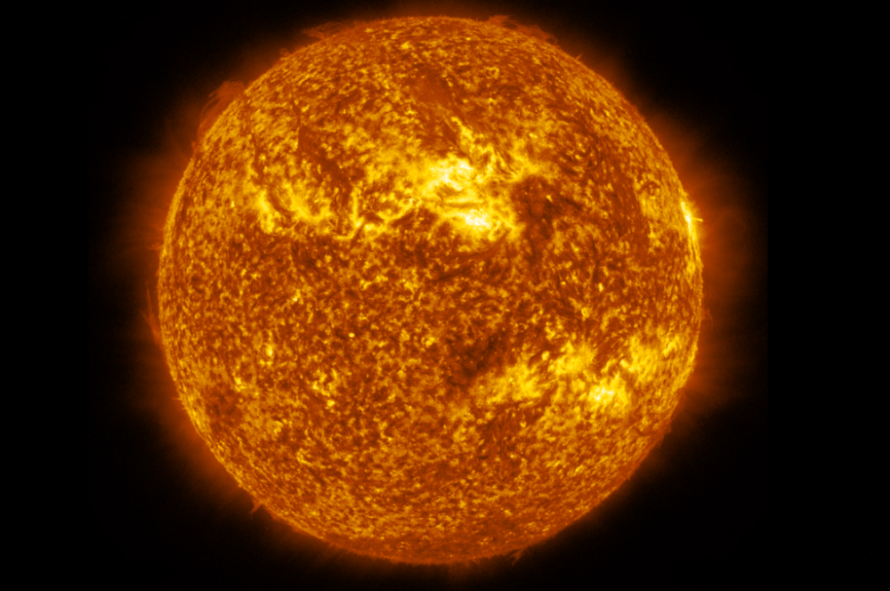
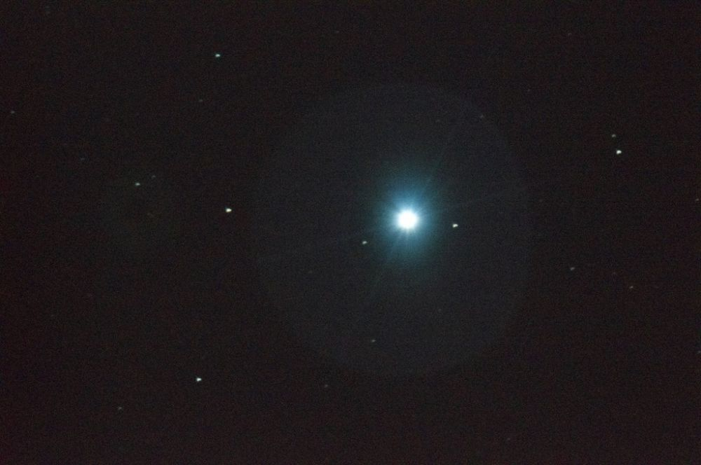
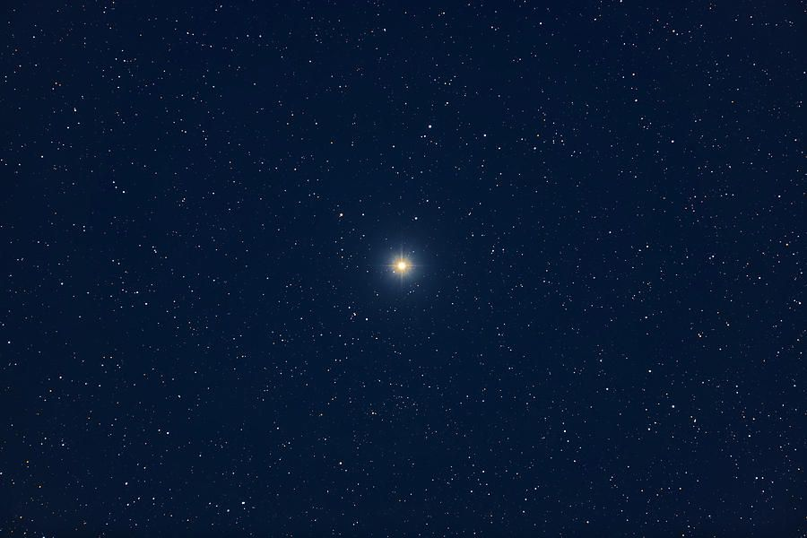
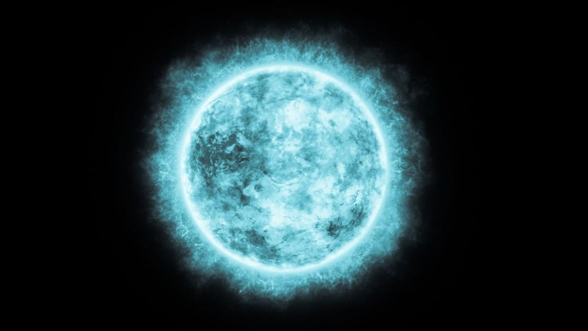

| Gambar | Nama Bintang | Deskripsi |
|---|---|---|
|  | Sirius | Sirius yang dikenal juga dengan sebutan Alpha Canis Majoris ini merupakan bintang yang paling terang di langit. Sirius dapat dilihat dari hampir seluruh tempat di Bumi, kecuali bagi yang tinggal pada lintang di atas 73,284 derajat utara |
|  | Canopus | Canopus merupakan bintang yang paling terang ke-2 setelah Sirius. Bintang yang mempunyai nama lain Alpha Carinae ini merupakan bintang yang paling terang di rasi Carina. Berdasarkan spektrumnya, Canopus merupakan bintang raksasa terang berwarna kuning-putih. Jarak Canopus sekitar 310 tahun cahaya dari tata surya. |
|  | Rigil Kentaurus | Rigil Kentaurus juga dikenal dengan nama populernya yaitu Alpha Centauri. Bintang ini yang paling terang ke-3 setelah dua bintang di atas. Rigil Kentaurus adalah yang paling terang dalam rasi Centaurus. Bintang ini merupakan sistem tiga bintang yang terlihat seperti satu bintang bila dilihat dari jauh. Jarak Rigil Kentaurus dari tata surya kita sekitar 4,2 sampai 4,4 tahun cahaya dan merupakan sistem bintang yang terdekat dengan tata surya. |
|  | Arcturus | Arcturus atau Alpha Bootis merupakan bintang yang paling terang di rasi Bootes, serta bintang paling terang di bagian langit utara. Arcturus berjarak sekitar 43,9 tahun cahaya dari bumi dan terkenal dengan pergerakannya yang besar. Secara visual, setidaknya bintang ini 110 kali lebih terang dari matahari, tetapi energi yang terpancar 180 kali lebih banyak. |
|  | Vega | Vega atau yang mempunyai nama Alpha Lyrae merupakan bintang yang paling terang di rasi Lyra serta yang paling terang ke-5 di langit. Bintang ini merupakan yang paling terang kedua di langit utara setelah Arcturus. Vega mempunyai ukuran 2 kali lebih besar dari matahari dan memancarkan 50 kali energi lebih banyak. Umur Vega saat ini diperkirakan antara 200 sampai 500 juta tahun. Vega hanya akan bersinar satu miliar tahun saja, Sepersepuluh dari kala hidup matahari. Bintang ini juga memiliki rotasi yang sangat cepat. |
|  | Capella | Capella atau Alpha Aurigae adalah bintang yang paling terang di rasi Auriga dan ke-6 di langit. Bintang ini juga menjadi yang paling bersinar di langit utara setelah Arcturus dan Vega. Sebenarnya Capella terdiri dari 2 bintang yang sama-sama memiliki ukuran 10 kali matahari. Nama Capella berasal dari bahasa Latin yang berarti kambing betina (kecil), jarak bintang ini dengan bumi yaitu 42 tahun cahaya. |
|  | Rigel | Rigel atau Beta Orionis merupakan bintang yang paling terang di rasi Orion, serta yang paling terang ke-7 di langit malam. Rigel mempunyai suhu sekitar 11.000 derajat Kelvin. Nama Rigel berasal dari bahasa arab yang berarti kaki atau kaki orion. Rigel memiliki diameter 79 kali lebih besar dari matahari serta massa 21 kali lebih besar. |
Sumber : idntimes.com